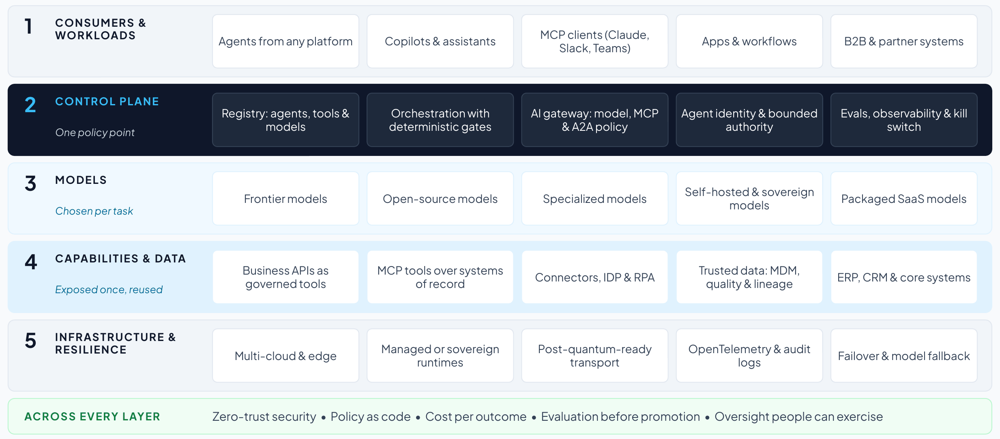

Section 6
A target reference architecture for the AI control plane
Sections 1 to 5 set out where enterprise AI is heading and what leaders are weighing. Agents are multiplying faster than the integration and governance around them,2,5 and control planes compete for authority over identity, orchestration and data.11 Architecture is on the board agenda with a two- to five-year horizon,15 and many agentic projects are expected to be canceled when cost, value or risk controls fall short.6 This section turns those findings into a target reference architecture, a vendor-neutral north star that says what good looks like and can be built in stages. It gives every platform decision a yardstick, including the one in Section 7.
The reference architecture places the control plane between everything that consumes intelligence and everything that provides it. The design rests on a single rule, that no consumer calls a model or an enterprise capability directly. Every agent-to-model and agent-to-tool call traverses the control plane, where identity, policy, routing, cost and audit are applied. In operational technology the rule extends one layer down, so agents reach control systems only through a governed conduit, with independent safety systems beneath everything (Section 5).

- Consumers and workloads: agents from any platform, copilots and MCP clients such as Claude, Slack and Teams, applications and workflows, and partner systems.
- Control plane: a registry of agents, tools and models, each with an owner and a risk tier, and one gateway for model, MCP and A2A traffic that applies policy, routing and cost limits. It adds orchestration with deterministic gates for multi-agent work, identity and delegated authority for agents, and evaluation, observability and a kill switch.
- Models: frontier, open-source, specialized, self-hosted and packaged SaaS models, chosen per task within cost, latency and regulatory limits.1
- Capabilities and data: business capabilities exposed once as governed APIs and MCP tools over ERP, CRM and core systems, with connectors, document processing and automation reaching legacy and unstructured sources. Trusted data and context come from master data, data quality, lineage and a governed catalog.
- Infrastructure and resilience: multi-cloud and edge deployment, managed or customer-operated runtimes where sovereignty requires them, post-quantum-ready transport, OpenTelemetry-based observability and audit logs, and failover with model fallback.
- Across every layer: zero-trust security, with strong authentication, workload identity for agents, encryption and tamper-evident logs. Governance also spans the layers, with policy as code, cost accountability, evaluation before promotion and human oversight that people can exercise.
Design principles
- One policy point. Every agent-to-model and agent-to-tool call passes through the control plane, whichever platform built the agent.
- Capabilities first. Each business capability is exposed once, governed and reusable by any agent or application (Section 3).
- Open by default. MCP and A2A connect tools and agents, so models and agent platforms can change without rebuilding integrations (Section 4).
- Trust by design. Agents carry their own identities and bounded authority, high-risk actions need approvals bound to the action, and people can stop an agent in time (Sections 4 and 5).
- Economics built in. Cost and value are measured per outcome, and routing sends each task to the least costly model that meets its quality bar (Section 4).
- Adoptable in stages. Each layer delivers value on its own, so the architecture can be built in phases that each return value (Section 8).
How the north star maps to review frameworks
Enterprise architects often review designs against a cloud provider’s framework. The north star answers the questions that the three most used for agents ask, which gives reviewers a common language:
| Framework | What reviewers check | Where the north star answers it |
|---|---|---|
| AWS Well-Architected Agentic AI Lens (June 2026)76 | The six Well-Architected pillars applied to agents: bounded autonomy, least-privilege tool access, tiered oversight matched to the risk and reversibility of each action, tracing of agent reasoning, and control of token costs |
|
| Microsoft Cloud Adoption Framework: govern and secure AI agents (June 2026)14 | Accountability, one registry, one identity per agent, consistent policy across platforms, cost tags and alerts, audit mode before enforcement, adversarial testing, trusted MCP and A2A integrations, and a plan to disable a misbehaving agent | |
| Google Cloud’s 20 questions for the agentic enterprise (July 2026)47 | Build, scale, optimize and govern: agents’ data access aligned with their users’, shadow AI and agent sprawl, rules for how users, agents, data and tools interact, enforcement and visibility, protection against leakage and prompt injection, detecting failures, and one place to manage the lifecycle |